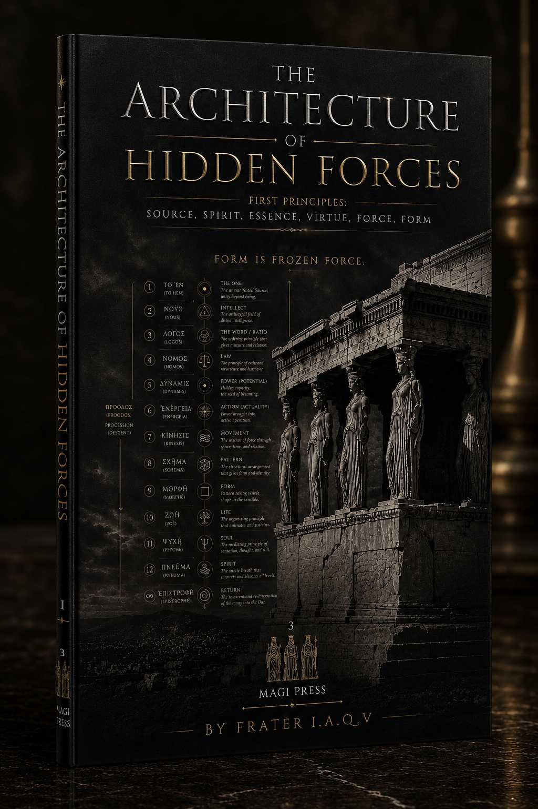

Author · Founder
Frater I.A.Q.V.
Frater I.A.Q.V. is the author of Books of Ritual, Symbol, and Transmutation, a seven-volume architecture of hidden force. The work moves from Source, Spirit, and Essence through Root Ether, number, celestial order, subtle anatomy, signatures, and the art of right relation, asking how invisible potency becomes living form and returns to its source.
Areas of Study
- Hermetic philosophy
- Ritual theory
- Sacred geometry
- Subtle anatomy